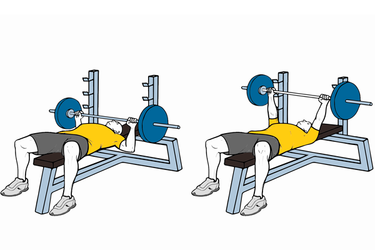
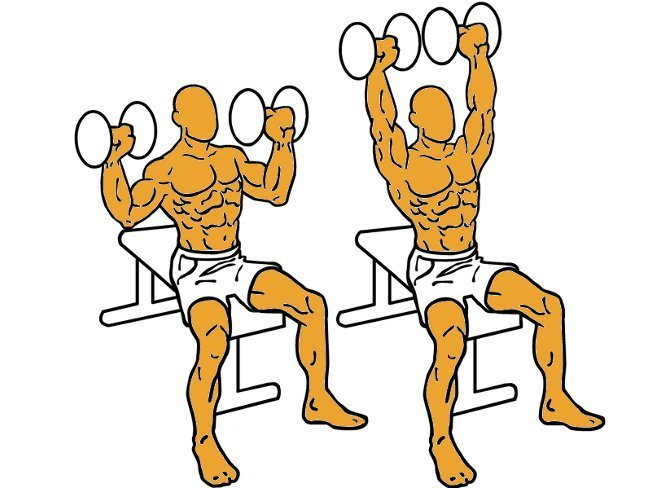

<style>
  @import url('https://fonts.googleapis.com/css2?family=Mitr&display=swap');
  @import url('https://fonts.googleapis.com/css2?family=Roboto+Flex:opsz@8..144&display=swap');
</style>

<ion-header>
  <ion-toolbar>
    <ion-title style="font-family: 'Mitr', sans-serif;font-size: 1.2em;text-align:center">
      <button [routerLink]="['/tabs/tab2']" ion-button icon-only
        style="border-radius: 50px;font-size: 27px; position: absolute; left: 10px;">
        <ion-icon name="chevron-back-sharp" size="small"></ion-icon>
      </button>
      Historial
    </ion-title>
  </ion-toolbar>
</ion-header>

<ion-content>
  
  <h3 style="font-weight: bold;font-family: 'Mitr', sans-serif; color: white; margin-left:0.5em">Rutina intermedia
    gimnasio
  </h3>
  <hr style="margin-left:0.5em">
  <p style="font-family: 'Roboto Flex', sans-serif;margin-left:0.5em">Objetivo: Ganancia muscular</p>
  <p style="font-family: 'Roboto Flex', sans-serif;margin-left:0.5em">Duración: 60 minutos</p>
  <p style="font-family: 'Roboto Flex', sans-serif;margin-left:0.5em">Equipamiento: <span
      style="color: rgb(255, 0, 0)">SI</span></p>
  <p style="font-family: 'Roboto Flex', sans-serif;margin-left:0.5em">Lugar: Gimnasio</p>
  <hr style="margin-left:0.5em">

  <div>
    <h4 style="font-weight: bold;font-family: 'Mitr', sans-serif;color: white; margin-left:0.5em">Calentamiento</h4>
    <p style="font-weight: bold;font-family: 'Mitr', sans-serif;color: white; margin-left:0.5em">Estiramientos generales
    </p>
    <p style="font-family: 'Roboto Flex', sans-serif;margin-left:0.5em;margin-right:0.5em">Calentaremos de forma
      progresiva todos los
      músculos y articulaciones, ya que estamos al inicio del entrenamiento y estamos frios. Movimiento articular
      generalizado, realizando una respiración continua y controlada.</p>
  </div>

  <div>
    <h4 style="font-weight: bold;font-family: 'Mitr', sans-serif;color: white; margin-left:0.5em">1. Ejercicio</h4>
    <p style="font-weight: bold;font-family: 'Mitr', sans-serif;color: white; margin-left:0.5em; font-style: oblique;">
      Press banca</p>
    <p style="font-family: 'Roboto Flex', sans-serif;margin-left:0.5em;margin-right:0.5em">El press de banca, press de
      pecho, fuerza en banco, fuerza acostado o press banca, es un ejercicio de peso libre que trabaja principalmente la
      zona superior del cuerpo.</p>
    
    
    <p style="font-family: 'Roboto Flex', sans-serif;margin-left:0.5em"><span
        style="font-style: oblique; text-decoration: underline;">Series:</span> 4 series de 8/10 repeticiones</p>
    <p style="font-family: 'Roboto Flex', sans-serif;margin-left:0.5em"><span
        style="font-style: oblique; text-decoration: underline;">Descanso:</span>90 segundos entre serie</p>
  </div>

  <div>
    <h4 style="font-weight: bold;font-family: 'Mitr', sans-serif;color: white; margin-left:0.5em">2. Ejercicio</h4>
    <p style="font-weight: bold;font-family: 'Mitr', sans-serif;color: white; margin-left:0.5em; font-style: oblique;">
      Jalón al pecho
    </p>
    <p style="font-family: 'Roboto Flex', sans-serif;margin-left:0.5em;margin-right:0.5em">Este ejercicio suele
      utilizarse mayormente para el trabajo del dorsal ancho, aunque existen otros músculos con una importante
      activación, como son el deltoides posterior, pectoral mayor, bíceps braquial, redondo mayor, tríceps braquial,
      musculatura abdominal, etc.</p>
    
    
    <p style="font-family: 'Roboto Flex', sans-serif;margin-left:0.5em"><span
        style="font-style: oblique; text-decoration: underline;">Series:</span> 4 series de 8/10 repeticiones</p>
    <p style="font-family: 'Roboto Flex', sans-serif;margin-left:0.5em"><span
        style="font-style: oblique; text-decoration: underline;">Descanso:</span> 90 segundos entre serie</p>
  </div>

  <div>
    <h4 style="font-weight: bold;font-family: 'Mitr', sans-serif;color: white; margin-left:0.5em">3. Ejercicio</h4>
    <p style="font-weight: bold;font-family: 'Mitr', sans-serif;color: white; margin-left:0.5em; font-style: oblique;">
      Press militar
    </p>
    <p style="font-family: 'Roboto Flex', sans-serif;margin-left:0.5em;margin-right:0.5em">El Press Militar, también
      conocido como Press de Hombro o Press Olímpico, principalmente recluta nuestros hombros (deltoides medio y
      externo), pero también hay implicación de nuestros Tríceps, Pectorales, Trapecios, Estabilizadores Escapulares y
      Core.</p>
    
    
    <p style="font-family: 'Roboto Flex', sans-serif;margin-left:0.5em"><span
        style="font-style: oblique; text-decoration: underline;">Series:</span> 4 series de 8/10 repeticiones</p>
    <p style="font-family: 'Roboto Flex', sans-serif;margin-left:0.5em"><span
        style="font-style: oblique; text-decoration: underline;">Descanso:</span> 90 segundos entre serie</p>
  </div>

  <div>
    <h4 style="font-weight: bold;font-family: 'Mitr', sans-serif;color: white; margin-left:0.5em">4. Ejercicio</h4>
    <p style="font-weight: bold;font-family: 'Mitr', sans-serif;color: white; margin-left:0.5em; font-style: oblique;">
      Curl biceps
    </p>
    <p style="font-family: 'Roboto Flex', sans-serif;margin-left:0.5em;margin-right:0.5em">Este ejercicio de Curl
      trabaja los antebrazos además de los bíceps. En la posición inicial comenzamos de pie, sujetando las mancuernas
      con las palmas mirando hacia arriba y los brazos extendidos</p>
    
    
    <p style="font-family: 'Roboto Flex', sans-serif;margin-left:0.5em"><span
        style="font-style: oblique; text-decoration: underline;">Series:</span> 4 series de 8/10 repeticiones</p>
    <p style="font-family: 'Roboto Flex', sans-serif;margin-left:0.5em"><span
        style="font-style: oblique; text-decoration: underline;">Descanso:</span> 90 segundos entre serie</p>
  </div>

  <div>
    <h4 style="font-weight: bold;font-family: 'Mitr', sans-serif;color: white; margin-left:0.5em">5. Ejercicio</h4>
    <p style="font-weight: bold;font-family: 'Mitr', sans-serif;color: white; margin-left:0.5em; font-style: oblique;">
      Polea cuerda triceps
    </p>
    <p style="font-family: 'Roboto Flex', sans-serif;margin-left:0.5em;margin-right:0.5em">Como su nombre lo indica,
      este ejercicio se centra en el músculo tríceps, que se encuentra aquí, detrás de la parte superior del brazo. Si
      se realiza correctamente, la extensión del músculo tríceps ayuda a fortalecer y tonificar la parte posterior de la
      parte superior del brazo.</p>
    
    
    <p style="font-family: 'Roboto Flex', sans-serif;margin-left:0.5em"><span
        style="font-style: oblique; text-decoration: underline;">Series:</span> 4 series de 8/10 repeticiones</p>
    <p style="font-family: 'Roboto Flex', sans-serif;margin-left:0.5em"><span
        style="font-style: oblique; text-decoration: underline;">Descanso:</span> 90 segundos entre serie</p>
  </div>

</ion-content>

<ion-tab-bar slot="bottom">
  <ion-tab-button tab="tab1" [routerLink]="['/tabs/tab1']">
    <ion-icon name="barbell"></ion-icon>
  </ion-tab-button>

  <ion-tab-button tab="tab2" [routerLink]="['/tabs/tab2']">
    <ion-icon style="color: white;" name="stats-chart"></ion-icon>
  </ion-tab-button>

  <ion-tab-button tab="tab3" [routerLink]="['/tabs/tab3']">
    <ion-icon name="book"></ion-icon>
  </ion-tab-button>

  <ion-tab-button tab="tab4" [routerLink]="['/tabs/tab4']">
    <ion-icon name="person"></ion-icon>
  </ion-tab-button>